乾徳山
| 日付 | 2007年5月19日（土） |
|---|---|
| 山域 | 奥秩父 |
| メンバー | 単独 |
| 山行形態 | 日帰り |
| アクセス | 電車、バス |
| ルート (Map) | 乾徳山登山口→国師ヶ原→扇平→乾徳山→国師ヶ原→道満山→乾徳山登山口 |
天気予報によると今朝は雨雲が通過するらしいので、
天気が早く回復しそうな西の方面に向かう。
前々から登りたかった奥秩父前衛の山・乾徳山へ行く。
9:05 先週に引き続き塩山駅に来る。
登山客待ちのタクシーがたくさん並んでいる。
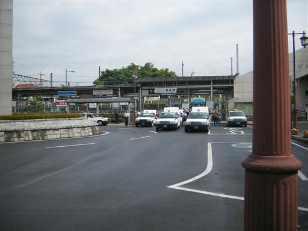
9:42 乾徳山登山口バス停到着。標高830m。
遅い到着だが、バスの始発がこの時間なので仕方が無い。
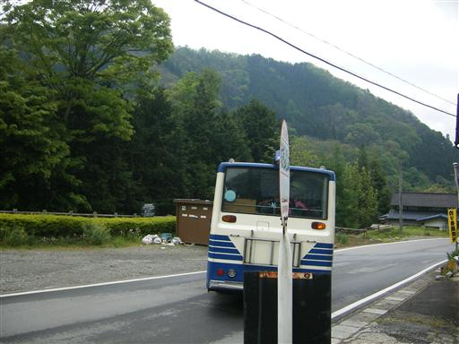
徳和渓谷を上から眺める。この辺りの渓谷は美しい。
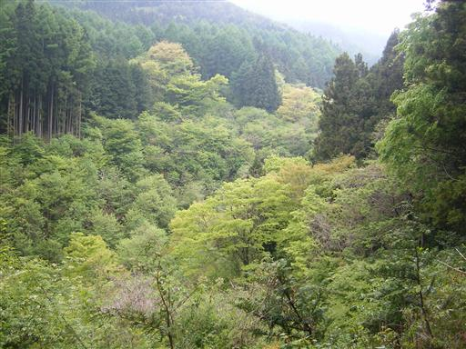
乾徳山登山口に到着。立派な看板がある。
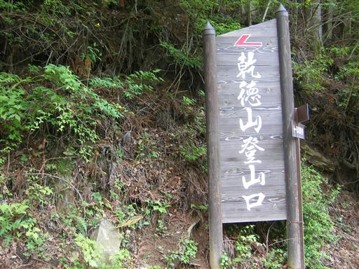
なかなか天気が晴れてこない。
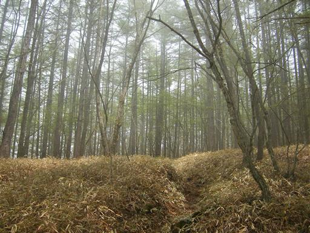
国師ヶ原に到着。山頂が見えてきた。

山頂に近くなってくると岩場が増えてくる。
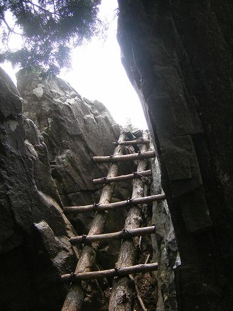
梯子や鎖が随所に現れる。
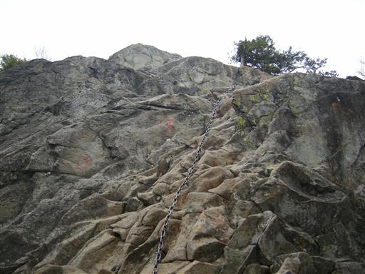
山頂の岩が見えてきた。鎖場を登っている人影が見える。
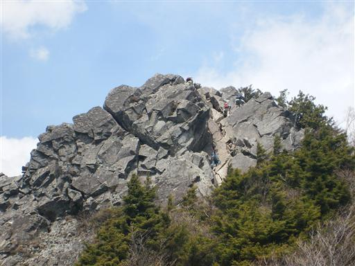
鎖場直下。ここを登れば頂上。
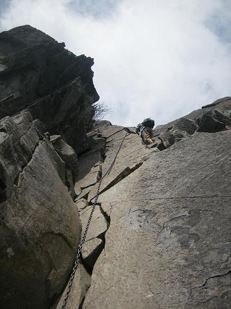
12:20 乾徳山山頂到着。標高2031m。
岩でできた狭い山頂。
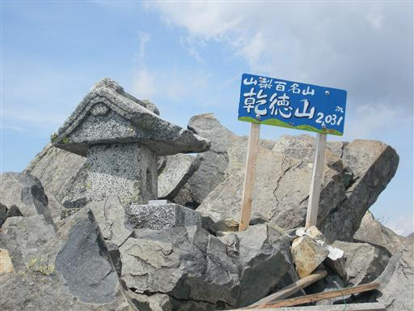
山頂からの眺め。奥秩父の山々が見える。
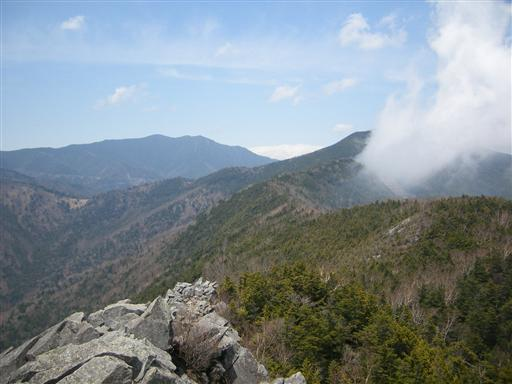
上空は晴れているが山には雲がかかっている。
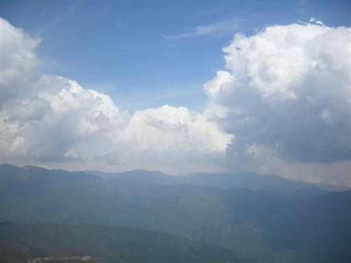
13:01 狭くて人が多い山頂を出発する。

下山道は石がごろごろしていて歩きにくい。
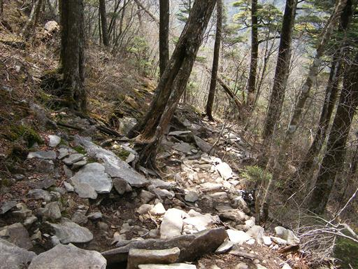
下山道から乾徳山を望む。
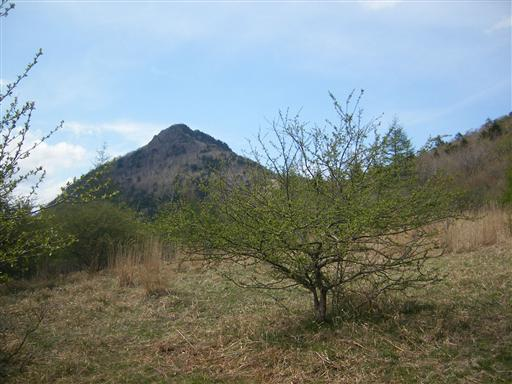
下山。バス停までの道中、吉祥寺による。

15:34 乾徳山登山口バス停到着。

バスが来るまで乾徳公園で暇つぶし。
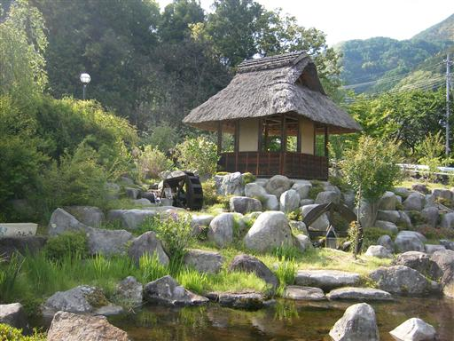
他の山行記録